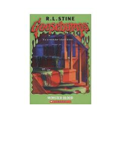

MBEvan o'zining g'alati xolasi uyida sirli va qo'rqinchli sarguzashtlarga duch keladi.
Ota-onasi ish yuzasidan boshqa shaharga ketayotgani sababli, Evan ismli o'smir o'zi deyarli tanimaydigan g'alati xolasi Ketrinning uyida qolishga majbur bo'ladi. U yerda Evan sirli va xavfli hodisalarga duch keladi, ayniqsa, u topib olgan g'alati modda bilan bog'liq voqealar boshlanadi. Bu asar mashhur 'Goosebumps' turkumining bir qismi bo'lib, yosh kitobxonlar uchun mo'ljallangan.